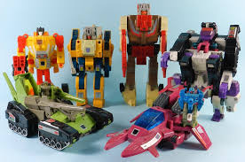

Los hijos de Hasbro
Hasbro, una de las principales empresas jugueteras del mundo, está sacando tajada del momento actual en el que se encuentra el cine, ese momento que apela a la nostalgia y que ha llenado las pantallas de remakes y reboots. Seguir leyendo
Los primeros crossovers

Los crossovers, para los ajenos al término, son aquellos juegos donde se encuentran e interaccionan personajes, elementos y lugares de dos o más sagas, compañías o universos ficticios distintos. De esta manera, un crossover es un animal muy común en la fauna «videojueguil» actual toda vez que cualquier combinación de personajes que tienen poco o nada que ver se batan, o cooperen, entre ellos llama la atención a miles de gamers. Seguir leyendo

Sobre mí
Soy un periodista con siete años de experiencia que ha pasado por varios medios de comunicación. Amante de la historia y defensor de la cultura pop